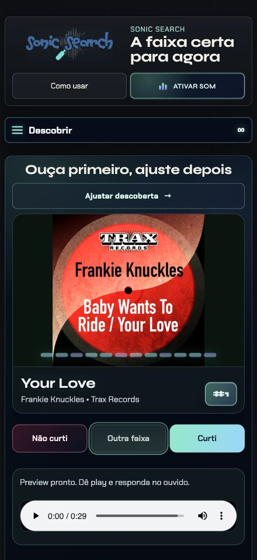

Seu momento.
Seu ritmo.
Explore por estilo, energia ou BPM. Os filtros estão ali quando você quiser afinar a busca.
PARA QUEM AINDA QUER SE SURPREENDER
Encontre música eletrônica além do que você já conhece. Ouça um preview, curta o que conecta e deixe seu gosto guiar a próxima descoberta.
Comece sem criar conta. Curtidas ilimitadas.

Explore por estilo, energia ou BPM. Os filtros estão ali quando você quiser afinar a busca.
Ouça os previews disponíveis e abra as plataformas para continuar. Cada reação ajuda a ajustar o radar.
Salve as favoritas, encontre-as por faixa ou artista e volte a ouvir pela sua biblioteca.
A CENA CONTINUA
Descubra sets, explore a seleção semanal SonicSearch Recomenda e acompanhe o Jornal Sonic. Tudo parte do mesmo lugar: a vontade de encontrar algo que você ainda não ouviu.
Explorar a seleção da semana →ROCK · PRÉVIA NO WEB APP
Alternativo, indie, psicodélico, punk, metal e post-punk. Conheça a primeira seleção, ouça trechos e guarde suas favoritas.
Experimentar a prévia de rock →Você pode começar sem login e guardar seu perfil neste aparelho. Uma conta permite acessar os recursos de sincronização disponíveis.
O Sonic Search é um app de descoberta. Ele oferece previews e players de fontes disponíveis e links para continuar ouvindo nas plataformas. A disponibilidade do áudio depende de cada fonte.
Sim. O web app permite explorar e salvar suas descobertas. No iPhone, você também pode instalar o app pela App Store.